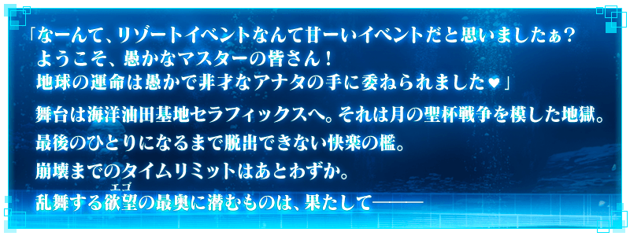
◆活動舉辦期間◆
2017年5月1日(一) 19:00～5月24日(三) 15:59
※延長舉辦期間。
※(5/1修正)
◆活動概要◆
舉辦期間限定Fate/EXTRA CCC×Fate/Grand Order GW・EX特別活動「深海電腦樂土 SE.RA.PH」！
活動限定Servant「★4(SR)BB」登場！
推進活動，讓BB洗心革面・並取得她吧！
由Fate/EXTRA CCC的原作者奈須きのこ執筆！
送上過去最大規模的劇本容量，無論如何請盡情享受特別活動！
◆参加條件◆
只限通過「終局特異點」的Master才能參加
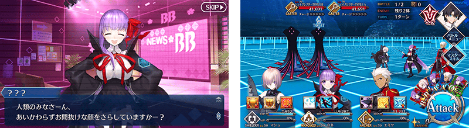
在Fate/Grand Order官方網站內首頁及Gallery，公開深海電腦樂土 SE.RA.PH的電視廣告。
敬請確認。
※動畫製作：SHAFT(シャフト)
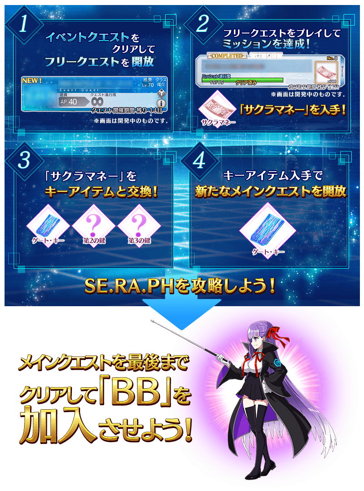
能享受故事的主線關卡會逐日開放。
主線關卡通過的話，會開放新任務！
對各主線關卡準備了可反覆刷來獲得活動道具的自由關卡。
| 關卡名 | 時間表 |
|---|---|
| 第一幕 | 5月1日(一) |
| 第二幕 | 5月2日(二) 23:00～ |
| 第三幕 | 5月4日(四) 23:00～ |
| 第四幕 | 5月5日(五) 23:00～ |
第五幕以後，會藉由推進主線關卡的攻略依序開放。
新關卡與任務會自2017年5月10日(三)開放。
新關卡與任務的開放條件為通過主線關卡到最後。
在主線關卡及自由關卡開始戰鬥時會有「BB拉霸」開始的情況。
BB拉霸會根據隨機連線的圖案，在戰鬥賦予各式各樣的效果。
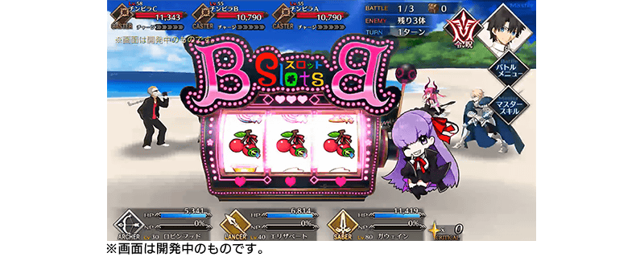
◆超值攻略方法・其1◆
裝備活動限定概念禮裝「いつかの夏」的話，掉落活動専用道具櫻系敵人的追加出現率會提升。
另外，裝備可在活動道具交換入手的活動限定概念禮裝「始まりの予感」的話，活動道具「櫻花籌碼」的掉落獲得數會提升。
※請注意在各關卡的道具掉落率並非100%。
◆超值攻略方法・其2◆
將特定的Servant編入隊伍的話，活動道具櫻花籌碼的掉落獲得數會提升！
【對象Servant】
| 職階 | Servant名 |
|---|---|
| Saber | 高文、鈴鹿御前、尼祿・克勞狄烏斯、尼祿・克勞狄烏斯〔Bride〕 |
| Archer | Emiya、Emiya〔Alter〕、吉爾伽美什、崔斯坦、羅賓漢 |
| Lancer | 弗拉德三世〔EXTRA〕、伊莉莎白・巴托里、迦爾納、庫・夫林、李書文 |
| Rider | 弗朗西斯・德雷克 |
| Caster | 玉藻前、童謠、漢斯・克里斯蒂安・安徒生 |
| Berserker | 玉藻貓、呂布奉先 |
| Alterego | 殺生院祈荒、Meltlilith、Passionlip |
| MoonCancer | BB |
※各Servant的增加數有所差異。
※5/10(三)追記
◆超值攻略方法・其3◆
裝備期間限定概念禮裝装備的話，活動敵人的追加出現率會提升。
※請注意在各關卡的活動敵人追加出現率並非100%。
| 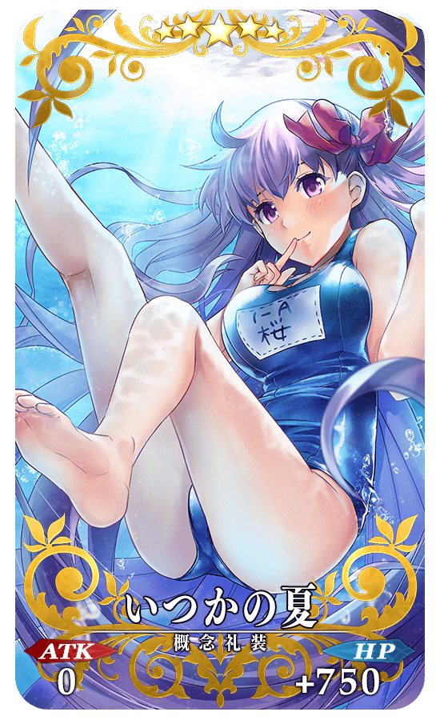 |
◆活動限定概念禮裝◆ |
| 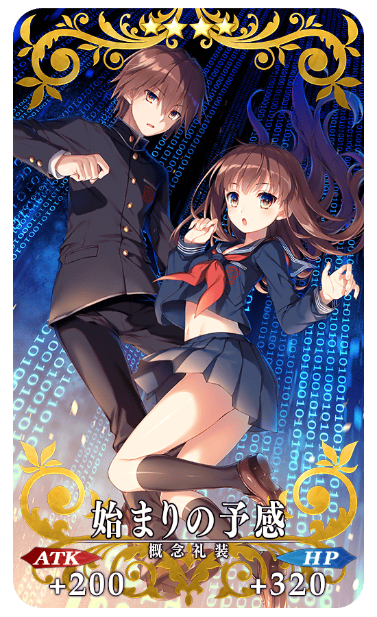 |
★★★★SR 始まりの予感 ATK 200(最大:750) HP 320(最大:1200) 技能 對自身賦予每回合星星2個獲得狀態＆賦予每回合NP2%獲得狀態 ＋ 櫻花籌碼的掉落獲得數增加1個【『Fate/EXTRA CCC 特別活動』活動期間限定】 |
跟Fate/EXTRA 系列關聯的Servant「伊莉莎白・巴托里(Lancer)」與「羅賓漢」的戰鬥動作及寶具演出翻新！
◆對象Servant◆
・伊莉莎白・巴托里(Lancer)
・羅賓漢
◆翻新時間◆
2017年5月1日(一)18:0019:00～
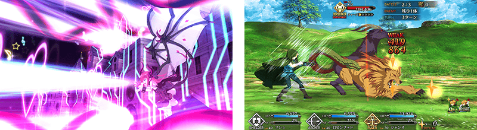
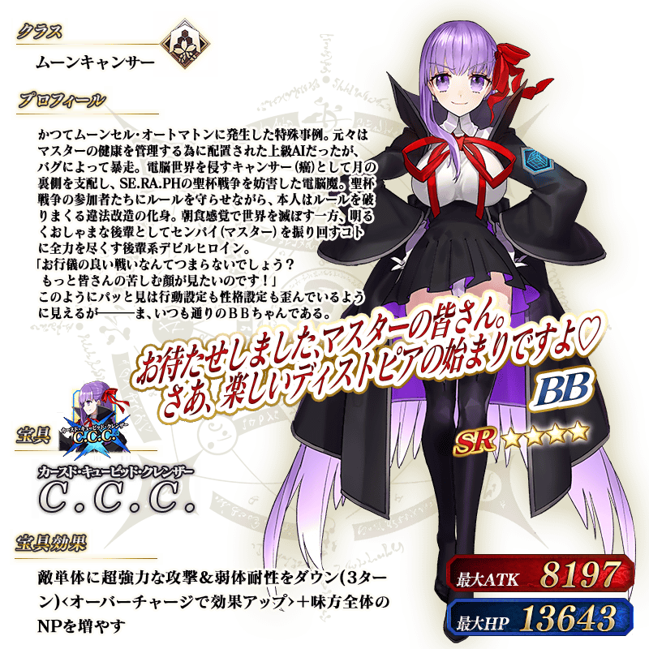
◆靈基再臨◆
使用在活動期間中的報酬外無法入手的「回憶的髮帶」的話，重複4次靈基再臨的話，卡面會有所變化！
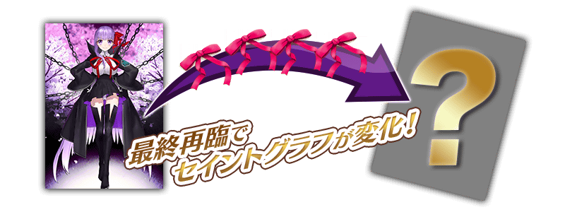
※BB不會隨靈基再臨使戰鬥角色的外觀變化。
◆取得活動期間限定·概念禮裝用EXP卡吧！◆
|
做為活動期間限定關卡的通過報酬，可大幅強化概念禮裝的EXP卡登場！ |
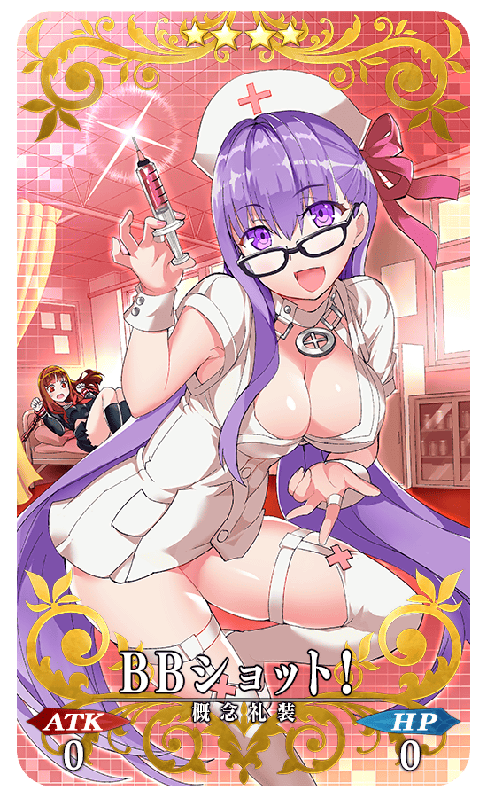 |
◆交換方法◆
交換期間:2017年5月1日(一) 19:00～5月31日(三) 11:59
※5/2(二)修正
※交換期間結束後「櫻花籌碼」會消失。
自達文西工房内的「活動道具交換」，可用活動専用道具交換以下的道具。
◆能用櫻花籌碼(サクラチップ)交換的道具◆
|
【活動限定概念禮裝】 |
本活動中，初登場職階「Alterego」與「MoonCancer」的Servant登場。
「Alterego」是對「Rider」「Caster」「Assassin」有利、對「Saber」「Archer」「Lancer」不利的職階。
給予「Rider」「Caster」「Assassin」的傷害變大，給予「Saber」「Archer」「Lancer」的傷害變小。
「MoonCancer」是對「Avenger」有利、對Ruler不利的職階。
給予「Avenger」的傷害變大，從「Avenger」受到的傷害變小。
給予「Ruler」的傷害變小，從「Ruler」受到的傷害變大。
另外，「Alterego」「MoonCancer」都對「Berserker」有相互關係，給予「Berserker」的傷害變大，從「Berserker」受到的傷害變大。
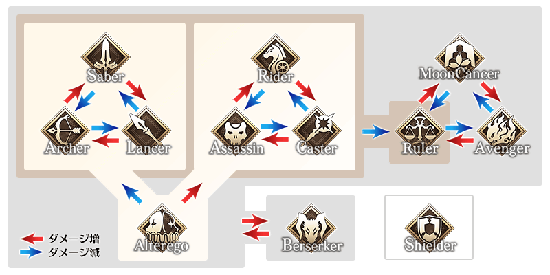
◆「Fate/EXTRA CCC特別活動Pick Up召喚」期間◆
期間：2017年5月1日(一) 19:00～5月24日(三) 15:59
※延長舉辦期間。
※(5/1修正)
以期間限定舉辦「Fate/EXTRA CCC特別活動Pick Up召喚」！
初登場職階「Alterego」的Servant「★5(SSR)Meltlilith」「★4(SR)Passionlip」以期間限定登場！
另外新Servant「★4(SR)鈴鹿御前」新登場！
詳情請在聖晶石召喚畫面左下的召喚詳細確認。
※Meltlilith、Passionlip在Pick Up期間結束後，不會追加到故事召喚。
※鈴鹿御前再Pick Up期間結束後，會追加到故事召喚。
期間限定概念禮裝「★5(SSR)我ら征くは星の大海」「★4(SR)月の海の生徒会」「★3(R)ザ・ケージ」也以期間限定登場！
裝備「★5(SSR)我ら征くは星の大海」「★4(SR)月の海の生徒会」「★3(R)ザ・ケージ」的話，活動敵人的追加出現率會提升。
※「★3(R)ザ・ケージ」在Pick Up期間中，也能在友情點數召喚獲得。
Pick Up期間中，期間限定Servant、新登場Servant、期間限定概念禮裝的出現機率提升！
10次召喚中確定1張★4(SR)以上和確定1位★3(R)以上的Servant！
※確定★4(SR)以上包含Servant和概念禮裝。
※「出現機率提升」意指比同稀有度的其餘Servant及概念禮裝出現機率更高的設定。
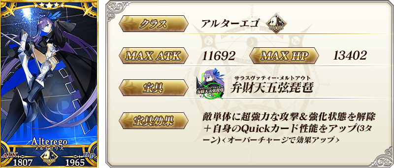
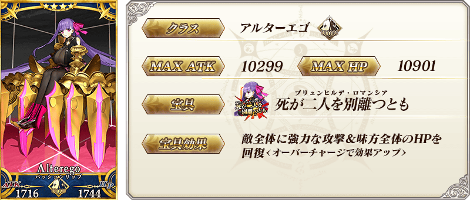

| 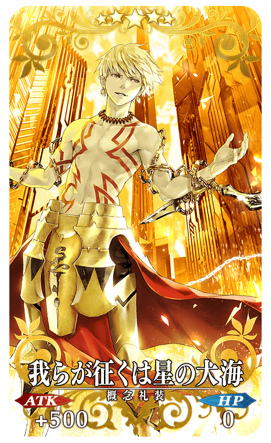 |
★★★★★SSR |
| 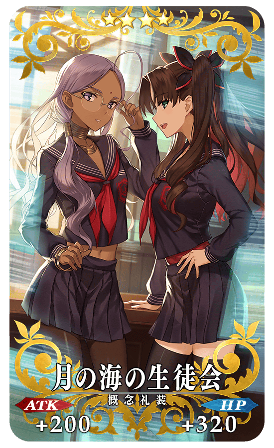 |
★★★★SR |
| 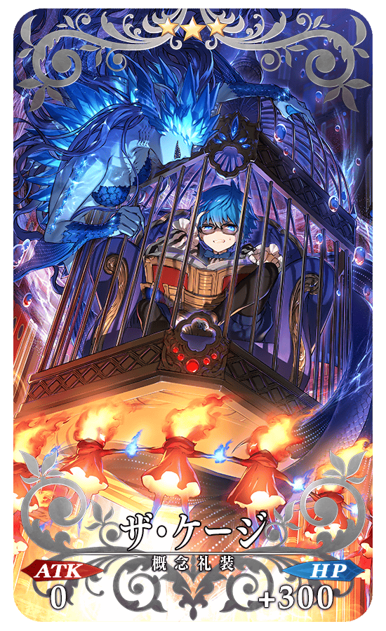 |
★★★R ザ・ケージ ATK 0 HP 300(最大:1500) 技能 自身的NP以10％累積狀態開始戰鬥＆遭傷害時的NP獲得量15%提升 ＋ TYPEⅠ系敵人的追加出現率提升20%【『Fate/EXTRA CCC 特別活動』活動期間限定】 |
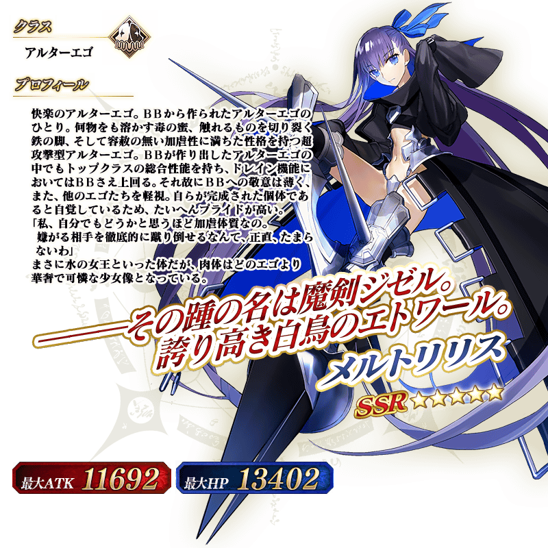
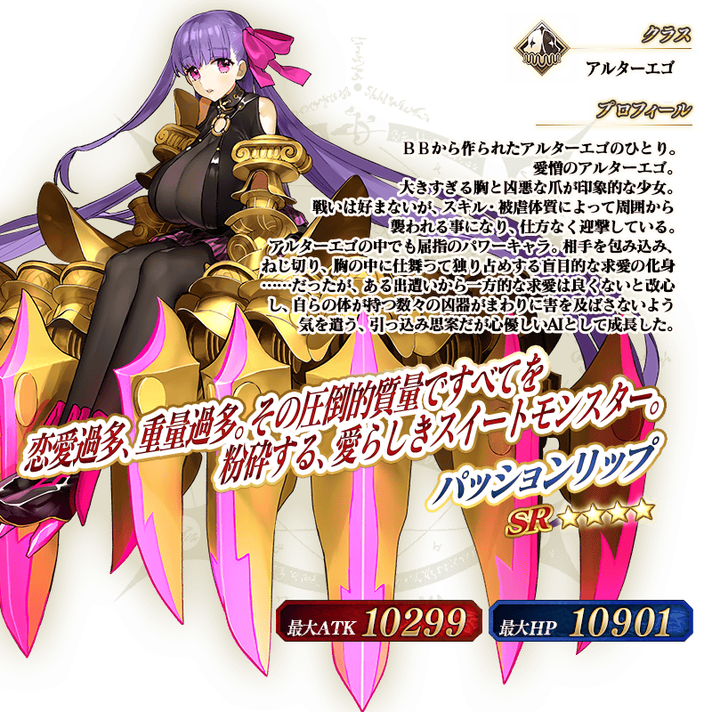
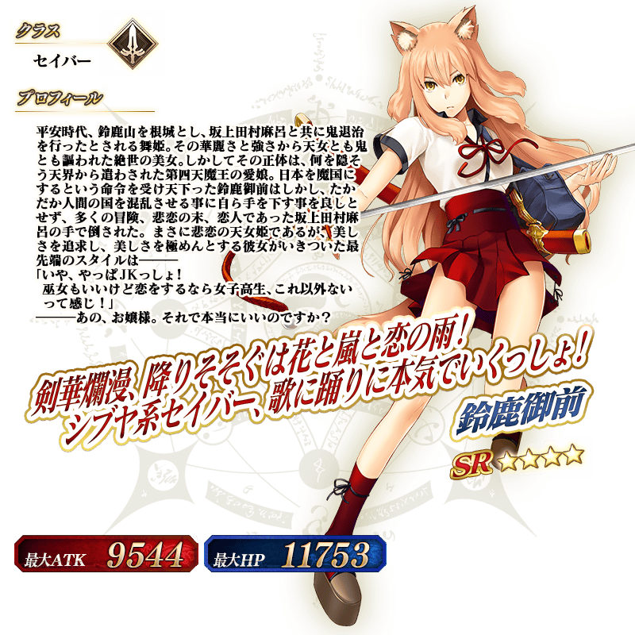
※4/27(四)修正